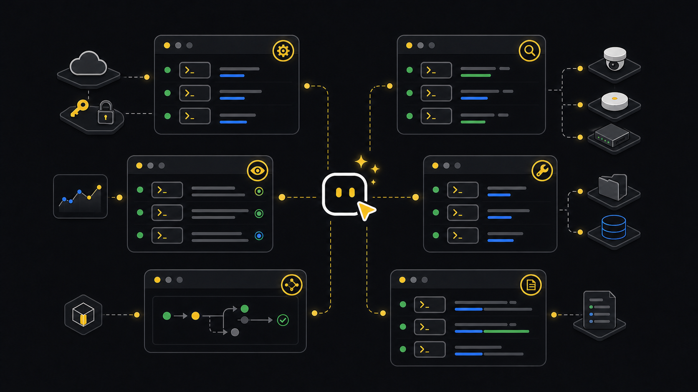

Commands
Commands reference.
Use this page as the command-family map. Start with the job you need, then run the exact command help for flags on your installed version.
--format controls setup/status JSON or text. --render controls inspect/report output files.--tenant <tenant-id> for tenant-scoped operations and automation.How to use this page
Start from the work you need to finish. Setup commands make a tenant usable. Watch and inspect commands read current state. Flows coordinate multi-step work. Utilities turn messy files into clean inputs. API calls are for endpoint-level control.
Use setup status, config doctor, and fast status.
Use incident watch, then inspect fleet or deep-dive for context.
Use util prepare, review generated rows and rejects, then run the matching workflow.
Describe the endpoint first, then call it with explicit path, query, or body JSON.
Ask an agent
Ask for an operator result. The agent can choose the command family and should show the commands it ran.
Show me whether this tenant is ready for operations.
Show me active incidents and save the fleet context JSON.
Prepare this spreadsheet for Edge claim. Explain rejected rows and stop before apply.
Find the endpoint for device notes and show a read-only example first.Terminal and CI
In a terminal, run the command family that matches the task and read the help for exact flags. In CI, prefer JSON, saved files, and plan-only flows unless the job has an explicit approval path.
# Human terminal
xyte-cli config doctor --tenant <tenant-id> --format text
xyte-cli ops watch incidents --tenant <tenant-id> --profile incidents-active --once
# CI-friendly read path
xyte-cli config doctor --tenant <tenant-id> --format json
xyte-cli ops inspect fleet \
--tenant <tenant-id> \
--render json \
--strict-json \
--out ./artifacts/fleet.json
# CI-friendly change path
xyte-cli flow run <flow-id> --tenant <tenant-id> --plan --strict-jsonCore setup
Use these when a machine, workspace, or job needs to become ready before any operational command runs.
xyte-cli doctor environment --format json
xyte-cli setup run --non-interactive --tenant <tenant-id> --key-file <path-outside-workspace> --format json
xyte-cli setup status --tenant <tenant-id> --field tenantId
xyte-cli config doctor --tenant <tenant-id> --format json
xyte-cli init --scope project --agents all --force --no-setup- Use
doctor environmentwhen the command is missing or the environment is unknown. - Use
setup statusfor the stored tenant state. - Use
config doctorfor live connectivity and credential diagnostics.
Operations
Use watch for incident changes and inspect for current tenant state. Save source JSON when the result will feed a report, dashboard, or agent answer.
xyte-cli ops watch incidents \
--tenant <tenant-id> \
--profile incidents-active \
--once \
--strict-json \
--out ./artifacts/incidents.ndjson
xyte-cli ops inspect fleet \
--tenant <tenant-id> \
--provider-scope auto \
--render json \
--out ./artifacts/fleet.json
xyte-cli ops inspect deep-dive \
--tenant <tenant-id> \
--window 24 \
--render json \
--out ./artifacts/deep-dive.jsonEndpoint ops
Use endpoint discovery before raw API calls. Describe the endpoint, check path and body shape, then call it with explicit JSON.
xyte-cli api endpoints list
xyte-cli api endpoints describe organization.devices.getDevices
xyte-cli api call organization.devices.getDevices \
--tenant <tenant-id> \
--query-json '{"page":1,"per_page":100}'For write-capable endpoints, prefer a guide or flow first. If you use api call directly, choose the target from endpoint output and read the state back afterward.
xyte-cli api endpoints describe organization.commands.sendCommand
xyte-cli api call organization.commands.getCommands \
--tenant <tenant-id> \
--path-json '{"device_id":"<device-id>"}' \
--query-json '{"page":1,"per_page":20}'Flows and utilities
Use flows for repeatable operator workflows and utilities for messy input files that need to become structured rows.
xyte-cli flow list --format text
xyte-cli flow run <flow-id> --tenant <tenant-id> --plan
xyte-cli flow run <flow-id> --tenant <tenant-id> --apply --resume <run-id-or-path>
xyte-cli util list-actions --format text
xyte-cli util prepare \
--action <action-key> \
--input <input.xlsx> \
--output-dir ./preparedWorkflow
- SetupCheck readinessConfirm the tenant before running scoped commands.
- ReadInspect stateWatch incidents or save fleet and deep-dive JSON.
- PlanChoose workflowUse a flow or utility dry run when the next step can mutate state.
- ApplyResume approved workRun apply only after the operator approves the plan.
- CheckRead back stateUse inspect or API calls to confirm the final tenant state.
Edge and reports
Edge claim and ping are async operations. Start in plan mode, then apply after approval. Reports should be generated from saved source files.
xyte-cli edge claim \
--tenant <tenant-id> \
--proxy-id <proxy-id> \
--device-ip <device-ip> \
--device-model-id <device-model-id> \
--space-id <space-id> \
--plan
xyte-cli edge claim-status \
--tenant <tenant-id> \
--proxy-id <proxy-id> \
--device-ip <device-ip>
xyte-cli ops report generate \
--tenant <tenant-id> \
--input ./artifacts/deep-dive.json \
--out ./reports/xyte-report.md \
--render markdownLogs and console
Use action logs when a run needs traceable command history. Use headless console when a job needs a machine-readable console frame.
xyte-cli --log-actions --log-actions-path ./logs/xyte-cli.actions.ndjson status --tenant <tenant-id>
xyte-cli logs list --path ./logs/xyte-cli.actions.ndjson --limit 200
xyte-cli logs show --path ./logs/xyte-cli.actions.ndjson --entry <session-id>:<seq>
xyte-cli ops console --headless --screen dashboard --once --tenant <tenant-id>Run xyte-cli <command> --help against the installed version and adjust the command family, not the workflow goal.
Use command-native JSON output or --strict-json. Do not parse human-readable terminal text.
Set --provider-scope organization or --provider-scope partner instead of auto.
Stop at --plan, review the target state, then resume with apply only after approval.